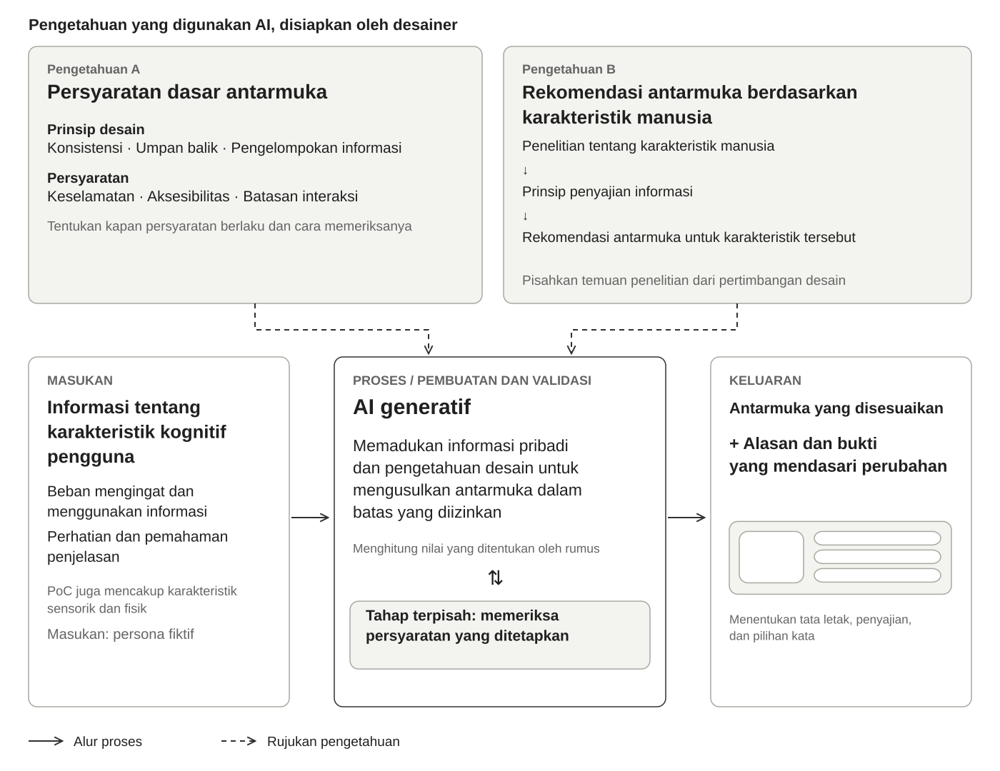
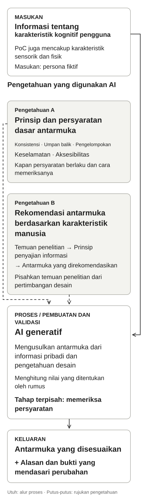
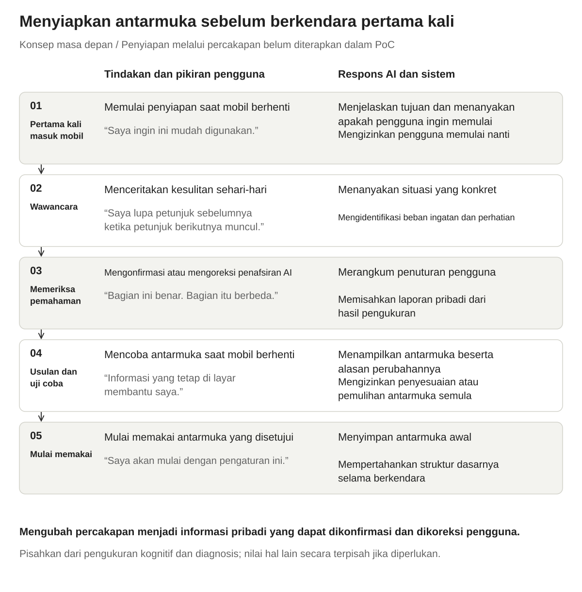
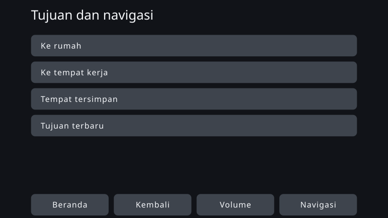
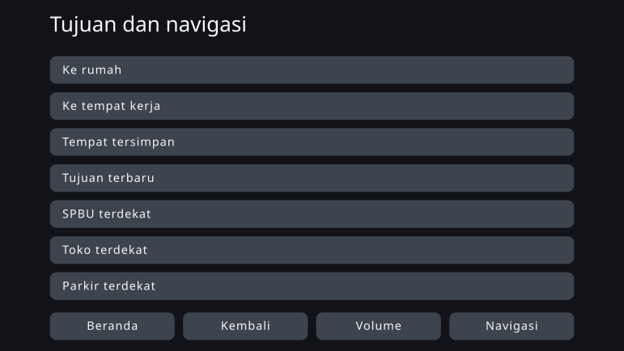
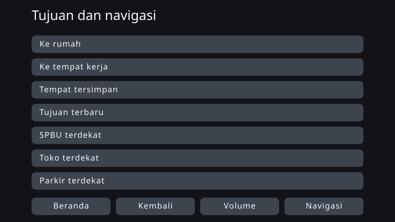

Personalisasi antarmuka melalui desain berbasis batasan
Agustus 2026
Ikhtisar
Proyek ini mengusulkan sistem yang menerima informasi tentang karakteristik kognitif yang relevan dengan penggunaan antarmuka, lalu menghasilkan antarmuka yang disesuaikan untuk orang tersebut. Sistem ini memadukan prinsip desain antarmuka, persyaratan keselamatan dan aksesibilitas, serta penelitian tentang karakteristik manusia.
Saya menggunakan pendekatan yang saya sebut desain berbasis batasan: manusia menentukan persyaratan dan kapan persyaratan itu berlaku, lalu AI generatif mengembangkan usulan konkret di dalam batas tersebut. Dengan navigasi mobil sebagai kasus uji, saya membangun pembuktian konsep yang menghasilkan antarmuka untuk 13 persona fiktif, termasuk karakteristik sensorik dan fisik, lalu memvalidasi keluaran terhadap persyaratan dalam tahap terpisah.
Perbandingan memperlihatkan satu perubahan tata letak layar yang jelas sebagai respons terhadap karakteristik fisik, sementara sebagian besar keluaran hanya menunjukkan sedikit perubahan visual. Kemudahan penggunaan dan keselamatan belum diuji bersama pengguna. Proyek ini membantu mengidentifikasi keputusan mana yang dapat diserahkan kepada AI generatif dan persyaratan mana yang membatasi ruang personalisasi.
Latar belakang: Berapa banyak kebutuhan berbeda yang dapat dipenuhi satu antarmuka?
Sebagian besar produk menyediakan satu antarmuka bersama yang dirancang untuk sebanyak mungkin orang. Namun, setiap orang berbeda dalam jumlah informasi yang dapat diproses sekaligus, kemudahan mengarahkan perhatian, kemudahan memahami kata-kata, dan ketepatan mengoperasikan kendali kecil. Antarmuka yang dirancang untuk mengakomodasi banyak orang pun belum tentu sesuai bagi setiap individu.
Evaluasi pada tingkat kelompok juga memiliki keterbatasan. Sebagai contoh, pedoman sukarela yang diterbitkan NHTSA pada 2013 mensyaratkan sedikitnya 21 dari 24 peserta memenuhi setiap kriteria penerimaan terkait lirikan mata. Hal ini tidak berarti semua orang dapat menggunakan antarmuka dengan sama baiknya. [1]
Meskipun suatu produk memungkinkan pengguna mengubah ukuran teks atau jumlah informasi yang ditampilkan, mereka harus terlebih dahulu menemukan pengaturannya, memahami kaitannya dengan kesulitan yang dialami, lalu memilih penyesuaian yang tepat. Saya berangkat dari pertanyaan apakah pilihan ini kurang dimanfaatkan, sehingga orang terus menggunakan antarmuka yang tidak sesuai bagi mereka.
Pada navigasi mobil, menatap layar dan mengoperasikannya bersaing dengan perhatian yang dituntut oleh mengemudi. [1] Jika ketidakcocokan dengan antarmuka dapat menambah beban itu, maka menyiapkan keadaan yang pas bagi orang tersebut sejak awal pemakaian layak ditelaah, baik dari sisi kemudahan pakai maupun keselamatan.
AI generatif memungkinkan pembuatan prototipe proses yang mengubah informasi pribadi dan pengetahuan desain menjadi antarmuka. Saya mengeksplorasi apakah proses ini dapat mengurangi pekerjaan merancang antarmuka secara manual untuk setiap orang.
Seberapa sering pengaturan itu benar-benar dipakai, dan bagaimana ketidakcocokan dengan antarmuka berpengaruh pada kecelakaan, tidak diuji dalam proyek ini.
Usulan — menghubungkan informasi pribadi dengan dua jenis pengetahuan perancangan
Sistem menerima informasi tentang karakteristik kognitif yang relevan dengan penggunaan antarmuka. Pembuktian konsep ini menggunakan persona fiktif yang juga mencakup karakteristik sensorik dan fisik. AI mempertimbangkan informasi tersebut bersama dua kumpulan pengetahuan yang disiapkan sebelumnya: aturan dasar desain antarmuka, serta pengetahuan yang menghubungkan karakteristik manusia dengan desain antarmuka yang direkomendasikan.
AI menghasilkan antarmuka di dalam batas yang diizinkan, lalu pemeriksaan terpisah memvalidasi kesesuaiannya dengan persyaratan. Keluarannya mencakup antarmuka yang disesuaikan dan penjelasan tentang apa yang diubah beserta alasannya.


Masukan: informasi tentang orang tersebut
Masukan mencakup kemudahan seseorang menyimpan dan menggunakan informasi dalam ingatan, seberapa mudah perhatiannya teralihkan oleh rangsangan lain, serta jenis penjelasan yang paling mudah dipahaminya. Implementasi juga mencakup penglihatan dan ketangkasan tangan. Sistem menggunakan informasi yang relevan dengan interaksi antarmuka, alih-alih menentukan layar hanya berdasarkan diagnosis.
Pengetahuan A: Persyaratan dasar antarmuka
Kumpulan ini mencakup prinsip dasar desain antarmuka: konsistensi, umpan balik atas tindakan, pengelompokan informasi, serta keterlihatan teks dan kendali. Kumpulan ini juga menetapkan pembatasan interaksi di dalam kendaraan dan persyaratan aksesibilitas, beserta situasi penerapannya.
Pengetahuan B: dari karakteristik menuju antarmuka yang dianjurkan
Kumpulan ini menghubungkan penelitian tentang karakteristik manusia dengan prinsip penyajian informasi, lalu dengan desain antarmuka. Misalnya, kesulitan mempertahankan informasi dalam ingatan sambil menyelesaikan tugas mengarah pada pengurangan beban ingatan, yang dapat diwujudkan dengan mempertahankan informasi yang diperlukan di layar.
Temuan penelitian belum tentu memberikan nilai desain yang spesifik untuk antarmuka navigasi mobil. Saya membedakan apa yang didukung penelitian dari pertimbangan desain yang saya tarik darinya. Perbaikan yang bermanfaat bagi semua orang dimasukkan ke aturan dasar, bukan dihitung sebagai hasil personalisasi.
Pengalaman yang diusulkan: Menemukan antarmuka yang sesuai sebelum berkendara pertama kali
Konsep untuk masa depan: penyiapan melalui percakapan belum diimplementasikan dalam pembuktian konsep ini.
Bayangkan Anda baru pertama kali duduk di kursi pengemudi mobil baru. Saat mobil berhenti, agen AI menanyakan pengalaman sehari-hari Anda. Alih-alih menelusuri pengaturan teknis, Anda menjelaskan hal yang menyulitkan dan cara yang sesuai bagi Anda.

-
Sebelum berkendara pertama kali: Memulai percakapan
AI:“Agar layarnya pas untuk Anda, boleh saya tanya beberapa hal tentang cara Anda biasa memakainya? Kita juga bisa melakukannya nanti.”
Orang itu memahami tujuannya dan memilih mulai sekarang atau nanti.
-
Wawancara: menceritakan kesulitan
AI:“Ketika panduan datang beruntun, di bagian mana biasanya jadi sulit diikuti?”
Pengguna:“Begitu panduan berikutnya datang, kadang saya lupa isi yang barusan.”
AI menanyakan situasi tertentu dan mengidentifikasi kesulitan yang berkaitan dengan ingatan dan perhatian.
-
Memeriksa pemahaman: Memberi pengguna kesempatan mengoreksi AI
AI:“Jadi lebih pas bagi Anda kalau informasi yang diperlukan tetap ada di layar, ketimbang harus mengingat langkah-langkahnya — apakah pemahaman saya benar?”
Pengguna mengonfirmasi atau memperbaiki penafsiran AI. Informasi yang dilaporkan sendiri melalui percakapan dipisahkan dari pengukuran kognitif dan diagnosis. Informasi yang memerlukan pengukuran akan dinilai secara terpisah.
-
Usulan dan uji coba: mendengar alasannya, mencoba layarnya
AI:“Untuk mengurangi apa yang harus Anda ingat, saya usulkan layar yang menampilkan tindakan saat ini dan langkah berikutnya sekaligus.”
Dalam keadaan berhenti, orang itu mencoba misalnya memilih tujuan. Ia bisa berkata “yang tadi lebih jelas” atau “di sini kata-katanya ingin saya ubah”, dan usulan dapat disesuaikan, atau antarmuka semula dipulihkan.
-
Mulai memakai: memakai antarmuka yang telah dikonfirmasi
Antarmuka yang telah dikonfirmasi disimpan sebagai keadaan awal. Selama berkendara, susunan dasar yang sudah dikenal pengguna dipertahankan. Bila ingin meninjaunya kembali, penyesuaian dapat dilakukan lagi saat berhenti.
Percakapan ini bertujuan menentukan konfigurasi awal yang sesuai melalui dialog yang memungkinkan pengguna menjelaskan kebutuhannya dan memperbaiki kesalahpahaman. Tujuannya bukan mengklasifikasikan pengguna sekali untuk selamanya.
Implementasi — memisahkan syarat yang harus dipenuhi dari penilaian yang diserahkan kepada AI
Saya mengimplementasikan alur mulai dari penerimaan informasi karakteristik seseorang hingga pembuatan, validasi, perenderan, dan perbandingan antarmuka. Sebagai pengganti wawancara melalui percakapan, saya menggunakan 13 persona fiktif dengan karakteristik berbeda sebagai masukan.
Navigasi mobil dipilih sebagai bahan karena syarat-syaratnya dapat ditangani secara konkret: luas layar, ukuran sasaran sentuh, jumlah informasi yang bisa ditampilkan, dan apa yang boleh dioperasikan sambil berkendara.
Desain berbasis batasan sebagai cara kerja
Desain berbasis batasan, dalam pengertian proyek ini, adalah metode ketika manusia merancang syarat yang harus dipenuhi beserta lingkup berlakunya, dan AI mengusulkan solusi konkret di dalam kerangka itu.
Pendekatan parametrik berbasis aturan menetapkan terlebih dahulu nilai atau pilihan yang sesuai dengan setiap masukan. Dalam proyek ini, saya menentukan rentang yang diizinkan dan bukti yang mendasari setiap keputusan, lalu menyerahkan pemilihan nilai serta kata-kata yang belum ditetapkan kepada AI generatif. Implementasi memadukan nilai hasil perhitungan dengan keputusan yang dihasilkan AI.
| Apa yang bisa dipastikan dari bukti | Penanganan dalam implementasi |
|---|---|
| Nilai tertentu atau hubungan matematis telah diketahui | Menghitung nilai dalam kondisi yang terverifikasi dan lingkup penerapannya |
| Arah penyesuaiannya diketahui, tetapi kadarnya tidak | Memilih nilai yang sesuai dengan arah penyesuaian dan batasan, lalu mencatatnya sebagai pertimbangan desain yang belum diuji |
| Bukti saja tidak menentukan pilihan yang sahih | Diperlakukan sebagai usulan penjajakan dan ditandai sebagai menunggu evaluasi |
Saat menerjemahkan temuan penelitian menjadi keputusan antarmuka, saya mencatat sumber, kondisi penerapan, dan pertimbangan desainnya. Antarmuka yang dihasilkan disertai alasan perubahan, sehingga dapat ditelusuri mengapa desain tertentu diusulkan untuk orang tertentu.
Memeriksa antarmuka yang dihasilkan pada tahap terpisah
Antarmuka dihasilkan sebagai data terstruktur yang mendeskripsikan elemen layar dan tata letaknya, lalu dirender dari data tersebut. Kode memeriksa persyaratan numerik dan struktural. Pemeriksaan terpisah oleh model bahasa besar (LLM) menilai sebagian persyaratan yang memerlukan penafsiran makna. Sistem juga mencatat hal di luar cakupan pemeriksaan otomatis dan hal yang tidak dapat diverifikasi karena informasi belum tersedia.
Pemeriksaan ini memastikan apakah keluaran memenuhi persyaratan yang telah ditetapkan. Evaluasi bersama pengguna tetap diperlukan untuk menentukan apakah antarmuka lebih mudah digunakan atau lebih aman.
Jika ditemukan persyaratan yang saling bertentangan selama proses desain, AI mengidentifikasinya dan manusia memutuskan cara memperbaikinya. AI tidak mengubah persyaratan atas inisiatif sendiri setiap kali menghasilkan antarmuka.
Perbandingan antarmuka: Tata letak yang berubah jelas dan yang hampir tidak berubah
Acuan perbandingannya adalah antarmuka yang dibuat dari nilai bawaan bersama, tanpa memasukkan karakteristik pribadi. Dengan himpunan fungsi yang sama, keluaran ketika karakteristik pribadi dimasukkan dibandingkan dengannya.
Gambar-gambar berikut merupakan keluaran prototipe, bukan tampilan sebelum dan sesudah perancangan ulang sistem navigasi komersial. Persona yang digunakan adalah masukan fiktif untuk menelaah pengaruh karakteristik tertentu, bukan representasi pengguna nyata.
Kasus ketika sasaran sentuh membesar
PS-12: Persona yang kesulitan melakukan sentuhan secara presisi
PS-12 memiliki usia, karakteristik kognitif, dan karakteristik sensorik yang sama dengan persona acuan PS-01; hanya ketangkasan tangannya yang berbeda. Pada gambar, sasaran sentuh menjadi lebih besar dan jumlah item di tengah layar berkurang dari tujuh menjadi empat. Jumlah ini tidak mencakup tombol tetap di sepanjang bagian bawah.
Antarmuka bawaan bersama

Antarmuka yang dihasilkan dari karakteristik pribadi


Memperbesar sasaran sentuh ada harganya: butir yang bisa dipilih sekaligus pada layar yang sama jadi lebih sedikit. Himpunan fungsi dirancang tetap dipertahankan, tetapi dari satu layar ini saja kemudahan berpindah ke layar berikutnya belum bisa dinilai.
Kasus ketika susunannya nyaris tidak berubah
PS-01 — persona yang ditetapkan sebagai acuan
Ukuran teks sedikit berbeda, tetapi jumlah item, tata letak, dan ukuran sasaran sentuh hampir sama. Dengan kombinasi aturan dan masukan ini, tata letak yang dihasilkan tidak berbeda secara berarti dari antarmuka bawaan bersama.
Antarmuka bawaan bersama


Antarmuka yang dihasilkan dari karakteristik pribadi


Hasil dan pembahasan: Seberapa besar kebebasan yang tersisa untuk menghasilkan antarmuka?
Nilai tambah AI generatif belum terbukti
Dalam perbandingan visual saya, PS-12 merupakan satu-satunya keluaran dengan tata letak layar yang jelas berbeda. Keluaran lain berbeda dalam pilihan kata dan pengaturan, tetapi tampilannya tidak memperlihatkan perbedaan manfaat yang berarti.
Perubahan pada PS-12 juga dapat dicapai melalui pengaturan ukuran tampilan dan jumlah informasi yang ditampilkan. Memulai dengan antarmuka yang sesuai tanpa perlu mencari pengaturannya sendiri mungkin memberikan manfaat. Pengalaman ini perlu dievaluasi secara terpisah dari pertanyaan apakah AI generatif diperlukan untuk menghasilkan antarmuka tersebut.
Pembuktian konsep ini tidak menunjukkan bahwa penyesuaian antarmuka dengan karakteristik kognitif meningkatkan kinerja tugas, atau bahwa AI generatif menghasilkan antarmuka yang lebih baik daripada pendekatan berbasis aturan.
Ruang perancangan yang dibangun kali ini sempit
Setelah ukuran minimum teks dan sasaran sentuh, luas layar, serta batas jumlah informasi yang ditampilkan diterapkan, hanya sedikit pilihan tata letak yang tersisa. Banyak bagian implementasi juga ditentukan oleh perhitungan atau struktur tetap, sehingga AI memiliki sedikit ruang untuk memilih di antara alternatif yang memenuhi persyaratan.
Pilihan kata masih memberi keleluasaan, tetapi perbedaannya kurang terlihat dibandingkan perubahan tata letak, sehingga penilaian visual tidak dapat menangkap seluruh manfaatnya. Saya menyimpulkan bahwa evaluasi AI generatif memerlukan sejumlah usulan yang sama-sama memenuhi persyaratan dan memiliki perbedaan yang bermakna bagi pengalaman pengguna.
Temuan ini berlaku pada aturan yang saya kumpulkan, parameter antarmuka yang saya pilih, dan rentang desain yang didukung implementasi ini. Temuan tersebut tidak menetapkan batas umum bagi navigasi mobil maupun antarmuka yang dipersonalisasi.
Selain itu, saya tidak memeriksa langsung teks lengkap seluruh standar terkait dari JIS, ISO, dan lainnya. Pengetahuan perancangan disusun dari bahan yang dapat diperoleh: makalah, panduan resmi, data publik, serta teks atau pratinjau sebagian standar. Luas rujukan itu mungkin memengaruhi pilihan perancangan yang tersedia. Namun apakah pembacaan cermat atas teks standar akan memperluas keleluasaan itu, atau justru mempersempitnya dengan syarat tambahan, masih harus dipastikan.
Bekerja bersama AI memperbaiki aturannya sendiri
Hasil lainnya adalah proses menentukan persyaratan pembuatan antarmuka dan membuatnya dapat diuji.
| Masalah yang ditemukan | Pengaruhnya pada perancangan |
|---|---|
| Satu elemen yang sama punya beberapa batas bawah, dan cara menggabungkannya kabur | Hubungan penerapannya diperjelas agar tak ada batas bawah yang dilanggar |
| Syarat yang seharusnya berlaku hanya saat berkendara juga berlaku saat berhenti | Keadaan berkendara tempat tiap syarat berlaku dinyatakan tegas |
| Kerumitan pilihan kata dan keberadaan ikon digabungkan menjadi satu dimensi desain | Memisahkan keduanya menjadi dimensi yang berdiri sendiri, sehingga pilihan yang tersisih tanpa alasan yang perlu dapat digunakan kembali |
| AI memakai syarat yang tidak berlaku bagi suatu keluaran sebagai dasar penilaian | Untuk tiap keluaran, syarat yang harus dirujuk dinyatakan tegas |
| Penilaian yang seharusnya tetap diserahkan kepada AI dipatok di sisi implementasi | Pembagian peran antara spesifikasi dan implementasi ditinjau ulang |
AI mengidentifikasi masalah, saya mengevaluasinya, lalu keputusan tersebut diterapkan dalam desain. Proses berulang ini memperjelas persyaratan yang harus berlaku bagi semua orang dan bagian antarmuka yang dapat dipersonalisasi.
Langkah berikutnya: Mengevaluasi personalisasi dan peran AI generatif
Berikutnya saya ingin menguji dua pertanyaan secara terpisah.
Pertama, seberapa bermanfaat pengalaman yang menyediakan antarmuka awal yang sesuai tanpa mengharuskan pengguna mengaturnya sendiri? Untuk menelitinya, wawancara melalui percakapan, kesempatan mengoreksi pemahaman AI, dan uji coba antarmuka perlu diimplementasikan, lalu keandalan masukan serta beban pengguna dievaluasi.
Kedua, dalam konteks desain apa perbedaan antarusulan yang dihasilkan AI dapat memperbaiki pengalaman? Saya ingin mengeksplorasi konteks ketika persyaratan masih menyisakan beberapa pilihan yang dapat diterima untuk menata informasi dan alur interaksi.
Studi bersama pengguna nyata akan membandingkan tiga antarmuka pada tugas yang sama: antarmuka bawaan bersama, antarmuka berbasis aturan yang disesuaikan menggunakan informasi karakteristik pribadi, dan antarmuka yang dihasilkan AI. Waktu penyelesaian tugas, kesalahan, lirikan mata, dan beban subjektif akan membantu membedakan dampak personalisasi dari dampak penggunaan AI generatif.
Saya juga berencana menelaah standar terkait dengan lebih saksama dan memperjelas pembedaan antara bukti penelitian dan pertimbangan desain. Selain membuat persyaratan dapat diuji, tantangan berikutnya adalah mempertahankan pilihan yang memenuhi persyaratan tersebut sekaligus memberikan perbedaan yang bermakna bagi pengguna.
Rujukan
- NHTSA, Visual-Manual NHTSA Driver Distraction Guidelines for In-Vehicle Electronic Devices (terbit 2013). Pedoman sukarela. Untuk kriteria penerimaan terkait lirikan mata lihat VI.E; untuk uraian tentang lepasnya perhatian dan risikonya lihat I.C dan bagian lain teks utamanya. Ini tidak berarti bukti konsep ini telah disertifikasi memenuhi uji tersebut. Dokumennya di Federal Register